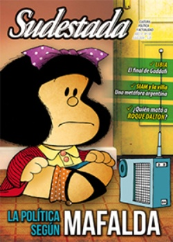

Buscar
La política según Mafalda
A medio siglo de su nacimiento, un repaso al retrato político de esa niña humanista que inspiró a las juventudes rebeldes, pero que también fue adoptada por el progresismo rosa argentino. La mirada política de Quino, su vínculo con la realidad y sus ideales plasmados en el humor gráfico como herramienta expresiva. Opinan Pablo De Santis y Daniel Divinsky.
Edición N° 130
Julio 2014
Revista bimensual
Comprar edición impresaSumario
- La política según Mafalda
- ¿Quién mató a Roque Dalton?
- De Buitres y otros rapiñeros
- Junto al pueblo...
- Las horas finales de Gadaffi
- Crónica de dos orillas
- El antropólogo salvaje
- La apropiación criminal de la cultura
- Un marxismo para los movimientos sociales
- "En el subte puedo conectar profundo con la gente"
Compartir Articulo
1.Mafalda dijo sanseacabó el 25 de junio de 1973, cinco días después de la masacre de Ezeiza, cuando la política se hacía a un costado para dar paso a un nuevo ciclo de violencia. En ese contexto, esa niña ya no tenía mucho para decir. Su creador, Quino, se autoexilió en marzo de 1976. Es cierto que los libros de Mafalda, por seguir las indicaciones de los editores y por cierta autocensura propia, no sufrieron ningún tipo de prohibición ni antes ni durante la dictadura. Pero, de alguna manera, generaron cierta molestia por debajo, a los ojos del régimen. Por algo fue que, en junio de ese mismo año, cuando asesinaron a los cinco curas palotinos, los militares dejaron sobre sus cadáveres, a la vista de los fotógrafos, un afiche con la imagen de una viñeta de Mafalda: aquella de "el palito de abollar ideologías". "Cuando vi por primera vez esas fotos publicadas mucho después de que se hubiesen ido los militares, fue algo que me impresionó muchísimo", se lamenta Quino, a quien la violencia le genera mucha angustia. Antes había tenido otro encontronazo, cuando un grupo de las Fuerzas Armadas de Liberación (FAL) asaltó un banco y mató a un policía. "Tiraron como volante una página mía que había salido en Primera Plana, en la que aparecía un tablero de ajedrez donde las piezas eran personajes humanos. De un lado había obreros y del otro los ricos, y aunque los obreros eran más el texto decía: 'Juegan las negras y hacen mate cuando les da la gana'".
2. Mafalda nació como garabato en 1962. Joaquín Salvador Lavado Tejón, alias Quino, la bosquejó para una publicidad de electrodomésticos que nunca se materializó. Pero, tozuda y persistente, la pequeña se las ingenió para seguir viva en la cabeza de su creador, porque dos años después -hace exactamente cincuenta años- lo llevó a decir: "bueno, es hora de que seas parte de la historia".
A partir de entonces, el personaje parece haber sido un dolor de cabeza para el dibujante, que tenía entonces treinta años. Quino era por ese tiempo un tipo introvertido, tal vez incluso mayor de apariencia, quizás debido a sus años de luto y tristeza durante la infancia tras la muerte de su madre primero (luego de una larga agonía), de su abuelo después, y finalmente de su padre.
Para intentar comprender el ideario de Mafalda, hay que reconocer primero que Quino siempre fue un hombre de ideas socialistas: lo dejan en claro muchas de sus tiras y también sus opiniones sobre la Revolución Cubana (no olvidemos que siempre tuvo buena relación con La Habana y que le confió al cubano Juan Padrón la dirección de sus primeros dibujos animados), pero que fue también crítico de las formas corrientes para llegar a ese socialismo. Sus abuelos eran comunistas y sus padres republicanos "socialistoides" -según su propia definición- y durante su infancia, la cocina echaba humo pero no de puchero en ebullición, sino de discusiones políticas.
Desde el día mismo de su nacimiento, Mafalda se convirtió en una figura política cuyo campo de acción fue cambiando cada dos o tres años, como una luchadora todo terreno, fue mutando de soporte: pasó de revista a diario y de diario a semanario. Y en ese tránsito, Quino nunca abandonó a su personaje, al menos hasta su despedida definitiva en 1973. Casi sin proponérselo, se transformó en el desvelo para la izquierda, que hasta hoy intenta comprender su línea política (o, según la propia Mafalda, su "garabato ideológico").
No podemos dejar de señalar el contexto para entender algunas cosas: tener en cuenta que la pequeña llegó al mundo en un momento donde el progresismo y el desarrollo todavía eran una posibilidad real (aunque también parecían un misterio). El golpe militar propinado a Frondizi terminó de desnudar ante la sociedad una conspiración castrense-oligárquica en una farsa democrática-golpista, que provocó la división del proyecto nacional-desarrollista en dos sectores: la lucha política legal y la lucha armada.
Con Arturo Illia en el poder y el peronismo proscripto, tras un acuerdo con Julián Delgado, jefe de redacción de Primera Plana, Quino intentó darle a Mafalda una impronta política contestataria, aunque siempre desde una postura democratista liberal. Durante la primera parte del gobierno radical, la tira muestra un raro humor infantil para adultos; tres niños que juegan al gobierno, chistes sobre la clase media y su pavoroso terror a la China comunista (que en ese momento iniciaba la revolución cultural), una izquierda marxista acechando, y como telón de fondo la disputa tecnológica URSS-USA por la conquista del espacio. En pocas tiras se despliega una crítica política aguda, que se ubica en el espacio de la lucha democrática legal, sin mención alguna del peronismo. El día siguiente al golpe de Onganía, Quino -que publicaba ya en el diario El Mundo (1965- 67)- muestra su doble frustración en un cuadro donde abandona por completo el humor: Mafalda nos cuestiona (en un plano detalle de su rostro) como lectores adultos diciendo: "Entonces, eso que me enseñaron en la escuela...". Aquí muestra por primera vez su frustración democrática, y también literaria (ya que sabe que se inicia una etapa de mayor censura). Para cuando llegue la segunda decepción, directamente abandonará el personaje.
(La nota completa en Sudestada N° 130 - julio de 2014)
Comentarios
Martín Azcurra
Articulos más vistos


LIBRERÍA SUDESTADA

Colección infantil

Distribuidora de Libros

Suscripción

Sudestada en URUGUAY

Otros articulos de esta edición
¿Quién mató a Roque Dalton?
A casi cuarenta años del asesinato del poeta salvadoreño, todavía es un misterio la identidad del que apretó el gatillo ...
"En el subte puedo conectar profundo con la gente"
Hace cinco años que trabaja en los subtes de Buenos Aires, como alimento para su subsistencia, su creatividad y su ...
De Buitres y otros rapiñeros
<doc1056|center>
Las horas finales de Gadaffi
Después de la invasión de la OTAN, de las milicias y los mercenarios, de las imágenes con la caída del ...
Un marxismo para los movimientos sociales
No fueron sólo pensadores, sino peregrinos de un camino posible y deseable hacia la revolución. En su recorrido se fueron ...
Crónica de dos orillas
El último día de abril la presidenta Cristina Fernández reinauguró la mítica SIAM. Empresa símbolo del Estado de Bienestar que ...